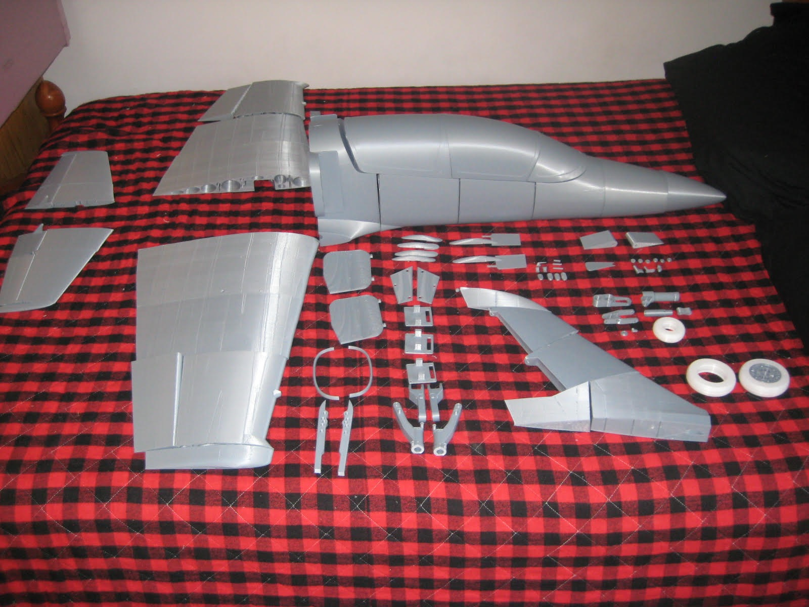
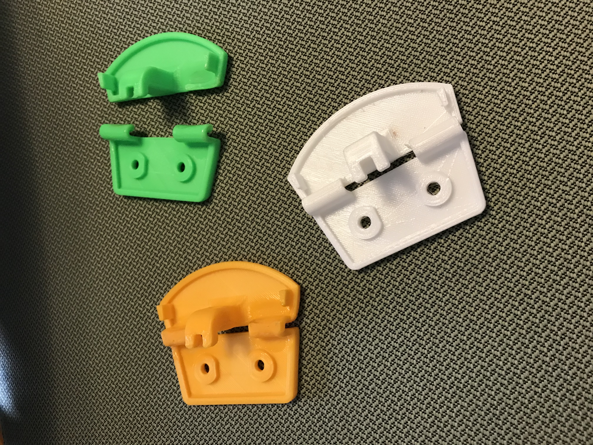

3D Alive, founded when I was 16, provided 3D printing and engineering consulting services. It helped sharpen my technical expertise, problem-solving skills, and client communication, all while delivering innovative solutions.



Services and Technology
- Custom Parts: Delivered precision FDM 3D-printed parts using materials like PLA, ABS, and TPU for diverse needs.
- Prototyping: Designed and created functional prototypes to address real-world client challenges.
- Consulting: Provided expertise in CAD design and optimized models for cost-effective additive manufacturing.
Skills and Expertise
- Technical Proficiency: Mastered FDM 3D printing techniques, material science, and CAD modeling.
- Problem-Solving: Resolved complex design issues, delivering innovative solutions for a variety of industries.
- Communication: Built strong client relationships by effectively translating technical concepts into actionable solutions.
- Entrepreneurship: Gained experience in business operations, marketing, and managing client expectations.